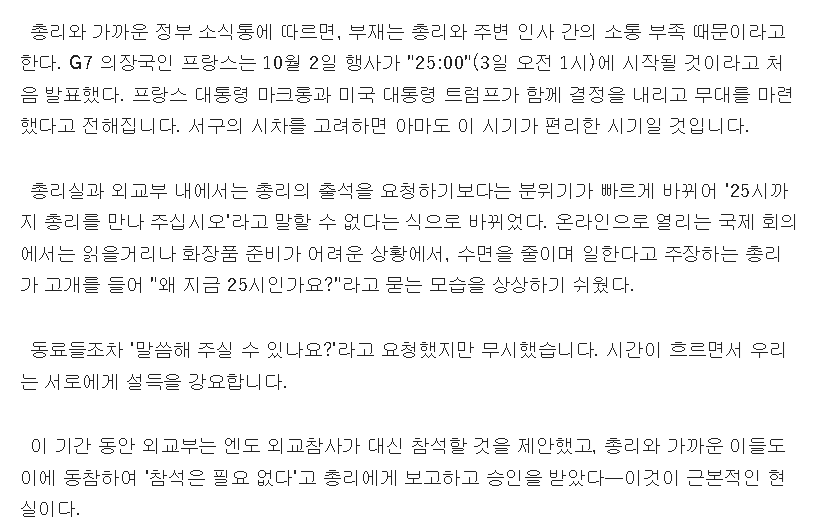

https://president.jp/articles/-/121717
디젤 가격 조정 문제로 G7 정상 온라인 회의가 개최됐다.
그런데 회의 시간이 일본 시간대로 11월 3일 새벽 1시임.
총리 관저나 외무성은 무서워서 총리에게 말하지 못했다.
왜냐면 취침해야 될 시간대에 깨어나 있어야 한다고 말하면
다카이치가 자신들에게 성질낼 게 뻔했으니까.
그렇게 설득 역할만 서로에게 떠넘기다가 시간만 지남.
이것도 저것도 못 한 채 불참 의사도 밝히지 않고 뭉게다가,
프랑스 측에서 개최 시간을 2시간 앞당겨서 개최하기로 통보.
하지만 다카이치 총리는 최종적으로 불참했다.


레전드네
나라꼴 잘 굴러간다 ㅋㅋㅋㅋㅋ